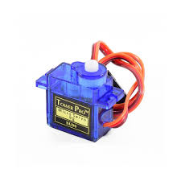
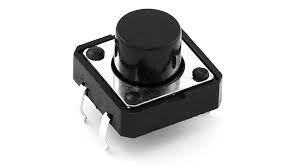
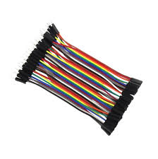

🔩 Componentes
Servomotores
Servomotores

Los servomotores son dispositivos electromecánicos que permiten controlar de manera precisa la posición, velocidad y aceleración de un eje. A diferencia de los motores tradicionales, los servomotores están diseñados para moverse hasta una posición específica y detenerse allí con exactitud, lo que los hace ideales para aplicaciones que requieren control preciso, como la robótica, la automatización y los sistemas de radio control.
Un servomotor típico consta de un motor de corriente continua (DC), un sistema de engranajes, un sensor de posición (como un potenciómetro) y un circuito de control. Funciona recibiendo una señal de control en forma de pulsos eléctricos (PWM), que le indica a qué ángulo debe girar. Este sistema le permite al servomotor mantener su posición aunque se le aplique una fuerza externa, lo que lo convierte en una herramienta fundamental en proyectos que requieren movimientos exactos, como brazos robóticos o mecanismos de apertura automática.
Pulsadores
Pulsadores

Los pulsadores en Arduino son dispositivos que se utilizan para enviar una señal eléctrica al microcontrolador cuando son activados. Estos son similares a los interruptores mecánicos y se pueden utilizar para controlar el funcionamiento de un circuito o para enviar una entrada al microcontrolador. Los pulsadores pueden ser de dos tipos: momentáneos o de acción lenta. Los pulsadores momentáneos envían una señal eléctrica solo mientras están siendo presionados, mientras que los pulsadores de acción lenta mantienen una señal eléctrica hasta que se suelta el botón.
Cables jumper
Cables jumper

Un cable jumper es un cable eléctrico temporal que se utiliza para hacer conexiones entre componentes electrónicos en proyectos de prototipado y pruebas. Estos cables tienen un conector macho en cada extremo que se puede insertar en una placa de pruebas o en los pines de un componente electrónico. Son útiles porque permiten realizar conexiones rápidas y fáciles sin necesidad de soldar.
Tipos
El cable jumper tiene varios tipos que deberías conocer:
Según su fisionomía: los hay macho y hembra, pero en el mercado vas a encontrar variaciones de cables con extremos homogéneos o heterogéneos. Es decir:Hembra-hembra en los dos extremos.Hembra-macho.
Macho-macho en ambos extremos.
Según la conexión: según la conexión, suelen tener terminales aislados, que son los más comunes y los que pueden ser macho y hembra, y también hay algunas versiones especiales con pinzas de cocodrilo en su/s punta/s. Este tipo de pinzas se pueden usar para tomar lecturas, o puentear componentes de forma temporal cuando no existe un conector específico, permitiendo anclar la pinza en un borne o conductor.